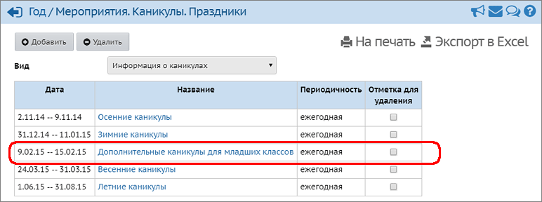
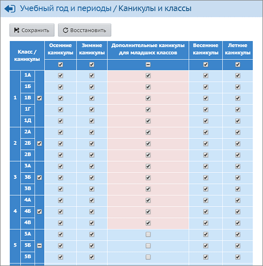

Данный экран позволяет ввести каникулы для определённых классов.
Рассмотрим пример, как создать дополнительные каникулы для младших классов.
В первую очередь, необходимо создать каникулы с нужным названием, перейдя на экран "Расписание -> Год", нажав кнопку События года. Добавим в список каникулы с названием "Дополнительные каникулы для младших классов", указав даты начала и окончания:

После этого нужно перейти в экран "Учебный год и периоды" и в блоке "Информация о каникулах" нажать кнопку Каникулы и параллели. Затем отметить галочками нужные параллели, в данном примере - с 1 по 4, и нажать кнопку Сохранить:

В вышеприведённом примере, после сохранения таких каникул, при создании расписания система автоматически будет учитывать, что в 1-4 классах эти даты являются каникулярными. Кроме того, в отчётах:
·
"Распечатка классного журнала",
·
"Учёт учебных часов учителя"
- количество учебных недель для 1-4 классов будет подсчитываться корректно.
Важно: границы каникул не должны пересекаться!
Пример: пусть требуется создать разные весенние каникулы для младших классов (с 20 по 31 марта) и для всех остальных классов (с 24 по 31 марта), - в этом случае будет правильным создать следующие каникулы:
а) общие каникулы для всей школы с 24 по 31 марта,
б) дополнительные каникулы только для младших классов с 20 по 23 марта.
Такое правило определения границ каникул нужно, чтобы корректно работали отчёты по количеству рабочих недель в учебном году.